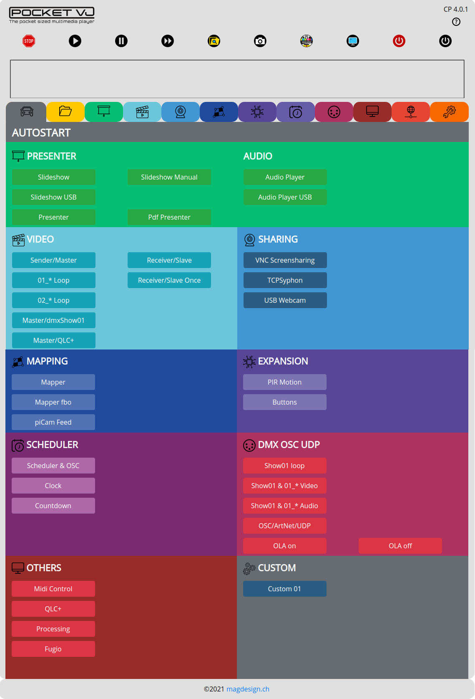

File Management¶
In this section you define into which mode the PocketVJ shall start when it powers up.
Just click the disred mode and reboot.
If it shall do nothing on boot or listen to the timetable or listen to OSC, select => Scheduler/OSC.
If it shall do noting but listen to OSC/Artnet ord DMX signals, select => OSC/ArtNet.